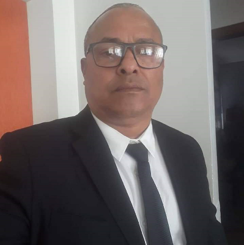

- Home
- >
- Currículo
Currículo
Dados Pessoais

Nome:
Elton Vilas Boas
Data de Nascimento:
09/04/1967
Residência:
Brasilia, Brasil
Idiomas:
Português (Nativo)
Inglês intermediário
Sobre Mim
Sou uma pessoa responsável, proativa e determinada, qualidades que, acredito, são essenciais para o exercício da advocacia e que estão alinhadas aos valores e à missão de sua organização.
Minha trajetória é pautada por uma busca constante pelo aprimoramento técnico e pessoal, aliada à perseverança diante de desafios e ao desejo de contribuir positivamente para o ambiente em que estou inserido. Valorizo o trabalho em equipe e a colaboração, características que reforçam meu perfil altruísta e comprometido com o bem-estar coletivo.
Além disso, destaco minha habilidade em lidar com situações que exigem discrição, ética e análise minuciosa, competências essenciais para o exercício da advocacia.
Educação
INiCIO 03/2019 - TÉRMINO 10/24
Bacharel em Direito Centro Universitario ICESP
início06/2022 - término04/2023
Pós-Graduado Gestão Social e Políticas Públicas- Faculdade FAMART
iNÍCIO 03/2007 - TÉRMINO 11/2009
Tecnoçogia em Gestão de Pessoas Universidade- Universidade Norte o Paraná - UNOPAR
Experiência de Trabalho
início 1985 - término 1992
Unidade De Iniciação Profissional para Menores
início 1992 - término 1995
Diretor Sindical- Sindicato de Classes
início 1995 - término 2000
Unidade de Semi-liberdade
início 2006 - término 2007
Centro de referência de Assistência Social
início 2007 - término 2009
Conselheiro Tutelar
2009 - atualmente
Unidade de Acolhimento de Adultos e Família
CONTATO →
← Voltar ao início